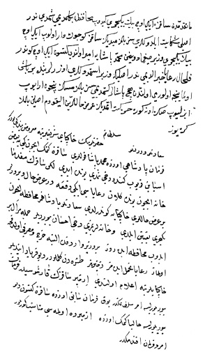

Belge 16: TKSA E.7002/48, veziriâzam ‘arzı
Belge 16
Özet:
Kapudân Mehmed Paşa, Sakız Adası’nı Venediklilere karşı korumak üzere hareket hazırlığını yapıp veziriâzamı ziyâret etmiş.
Fakat Sakız reâyası (Rumlar) iki kez ‘arzıhâl gönderip bir vezir gelirse masrafı reâyadan alınacak, ada halkı bu yükü kaldıramaz. Askerin zahîresi dışardan gelmeli diye şikâyetlerini İstanbul’a bildirmişler. Sakız İzmir karşısıdır, vezirin İzmir’de yerleşmesi uygun olur, emir sultanımındır, yok, Sakız’a gitsin buyrulursa şimdiki halde İzmir’de olması uygun olur. “Emr ü fermân efendimindir.”
H. H.: Emir (Özet):
Eskiden adayı korumak üzere iki üç bin yeniçeri gitmedi mi? Şimdi şikâyetlerinin aslı nedir? Siz bilmez miydiniz; Sakız Adası küçük adadır, iki üç bin yeniçeriye kumandan vezir olur, Mehmed Paşa’ya onun için emr olundu. Bunu reâya haber almış. Aslı nedir? Yeniçeri üzerinde bir baş olmalı. Önceleri Sakız’a paşalar gitmedi mi? Neden durumu izleyip ona göre hareket etmediniz. Reâya ‘arzıhallerini alıkodum, işin aslını bilmek gerek.
Yorum:
Veziriâzamın düşüncesine karşı vâlide nâdiren karşı koyar. Bu belge, bu bakımdan ilginçtir. Vâlide, iyi araştırılmadığı için sorguluyor. Saray, Sakız gibi stratejik önemde bir adanın vezir rütbesinde bir komutan idaresinde iki üç bin yeniçeriyle savunulması gerektiğine inanıyor. Foça bozgunu unutulmuyor. Foça ve Sakız donanma için yaşamsal önemdedir, Venedik tehdidi altındadır. Anadolu’dan Girit’e asker ve zahîre buralardan gider. İlginç olan reâyanın daima pâdişah kapısına şikâyet hakkı vardır. Sakızlılar buraya gelecek askerin yükünü üzerlerine almak istemediklerini veziriâzama bildirmişler.
Bu belge, Venedik donanmasının Sakız’ı tehdit ettiği bir tarihe (1654–1656 dönemi) ait olmalıdır.